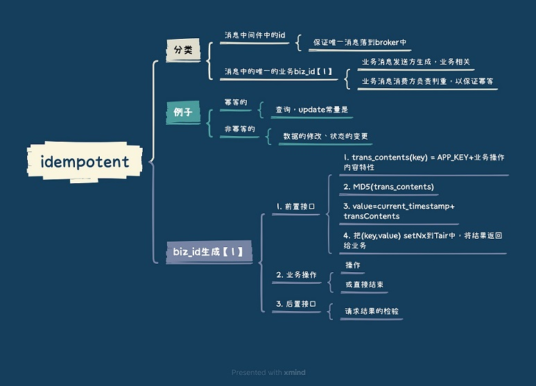

三种实现方式： #
1. 利用数据库的唯一约束实现幂等 #
在数据库中建一张转账流水表，这个表有三个字段：转账单 ID、账户 ID 和变更金额，然后给转账单 ID 和账户 ID 这两个字段联合起来创建一个唯一约束，这样对于相同的转账单 ID 和账户 ID，表里至多只能存在一条记录。
基于这个思路，不光是可以使用关系型数据库，只要是支持类似**“INSERT IF NOT EXIST”语义**的存储类系统都可以用于实现幂等，比如，你可以用 Redis 的 SETNX 命令来替代数据库中的唯一约束，来实现幂等消费。
2. 为更新的数据设置前置条件 #
“将账户 X 的余额增加 100 元”这个操作并不满足幂等性，我们可以把这个操作加上一个前置条件，变为：“如果账户 X 当前的余额为 500 元，将余额加100 元”，这个操作就具备了幂等性。
更加通用的方法， 数据增加一个版本号属性，每次更数据前，比较当前数据的版本号是否和消息中的版本号一致，如果不一致就拒绝更新数据，更新数据的同时将版本号 +1，一样可以实现幂等更新。
3. 记录并检查操作 #
通用性最强，适用范围最广的实现幂等性方法：记录并检查操作，也称为“Token 机制或者 GUID（全局唯一 ID）机制”。
具体的实现方法是，在发送消息时，给每条消息指定一个全局唯一的 ID，消费时，先根据这个 ID 检查这条消息是否有被消费过，如果没有消费过，才更新数据，然后将消费状态置为已消费。
这种方法适用范围最广，但是实现难度和复杂度也比较高，一般不推荐使用。
参考： #
- 分布式系统互斥性与幂等性问题的分析与解决 蒋谞
- 消息总线真的能保证幂等？ 58沈剑
- 《微服务设计》 11.6节 Sam Newman
- 《消息队列高手课 - 如何处理消费过程中的重复消息？》 李玥